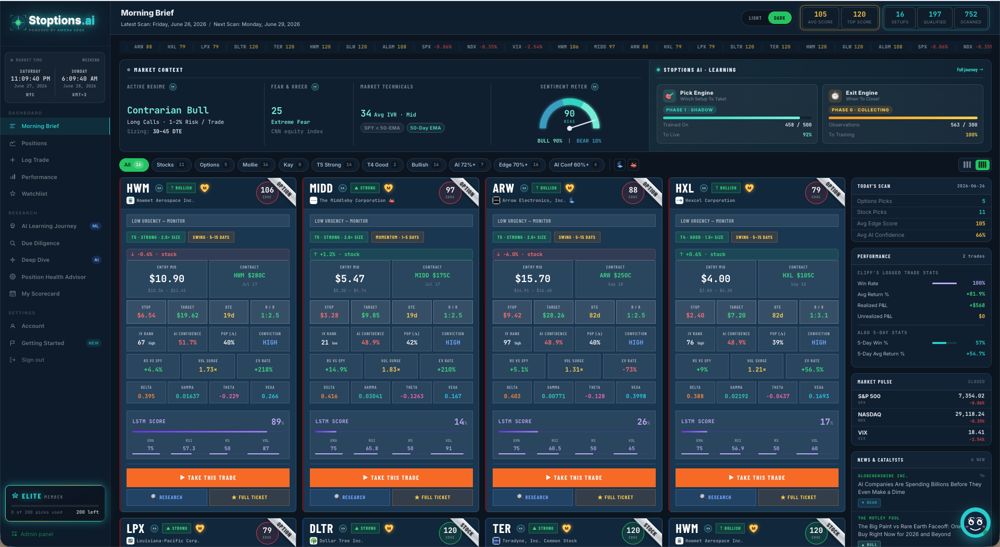

STOPTIONS.AI
Live options scanner & AI brain
A real-time options scanner across hundreds of tickers, scoring every setup with an LSTM brain and delivering a daily AI morning brief — entries, Greeks, risk, and conviction on one screen.
Read the full case study →